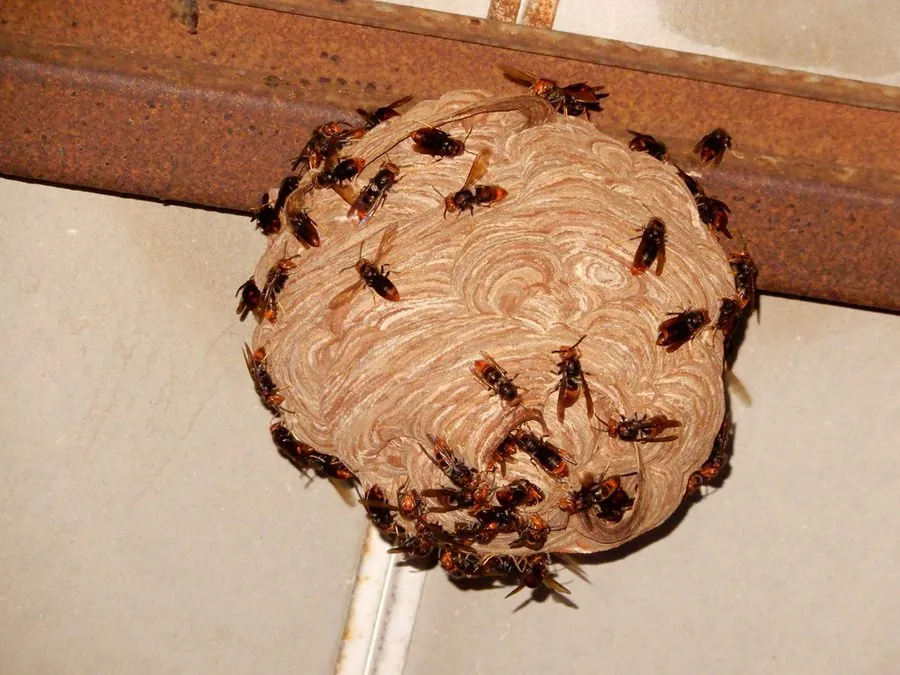

昆虫 · 动物界
黄脚胡蜂 Vespa velutina

原产东亚的大型胡蜂，腿端黄色，捕食蜜蜂，被引入欧洲后迅速扩散成为入侵物种，是养蜂业的重要威胁。
- 分类
- 门节肢动物门纲昆虫纲目膜翅目科胡蜂科属胡蜂属
- 栖息环境
- 林缘、村庄、果园与城市绿地，巢筑于树上或建筑檐下
- 地理分布
- 原产东亚，已入侵法国等欧洲国家
- 保护级别
- 暂无评估；在欧洲被列为入侵物种
物种志
黄脚胡蜂蜂王体长约 3 cm，工蜂约 2 cm，体黑褐色，腹部有黄黑相间的环带，腿的末端呈黄色，因此得名；头部橙黄色，上颚发达，飞行迅速，巢由木浆咬碎混合唾液筑成，呈纸质层状。
它一年发生一代，春季由越冬蜂王建巢，夏季群体扩大，秋季产生新蜂王和雄蜂。黄脚胡蜂常守在蜂箱入口捕食归巢的蜜蜂，咬下蜜蜂的胸部和腹部带回巢喂幼虫，对养蜂业危害较大。它原产于中国、印度、东南亚等地，2004 年随货物传入法国，随后扩散到欧洲多国，被列为入侵物种。防治方法包括寻找并清除蜂巢、给蜂箱安装防护网和设置诱捕器，在户外遇到蜂巢应保持距离。
形态与习性
- 食性成虫捕食蜜蜂等昆虫，取食树液和蜜露
- 体长蜂王约 3 cm，工蜂约 2 cm
- 识别腹部黄黑环带，腿末端黄色
- 生活史一年一代，受精蜂王越冬后春季建巢
- 入侵性2004 年传入法国，扩散至欧洲多国
- 防治清除蜂巢、蜂箱加防护网、设置诱捕器
趣味知识
- 黄脚胡蜂常守在蜂箱门口，专门捕食归巢的蜜蜂。
- 它原产东亚，2004 年传入法国后成为欧洲的入侵物种。
- 遇到黄脚胡蜂的蜂巢要保持距离，不要自行处理。